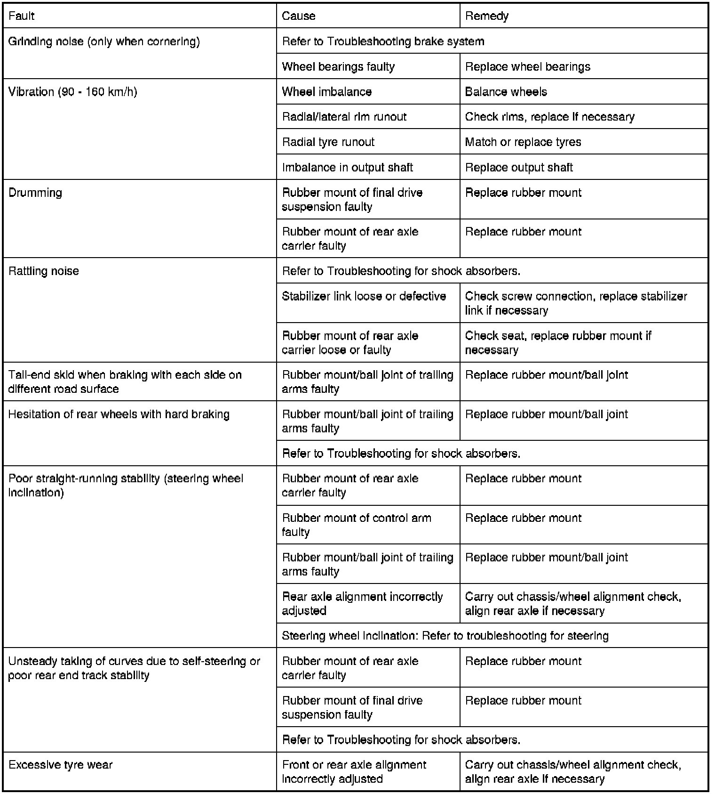

Operation CHARM
: Car repair manuals for everyone.
Home
>>
BMW
>>
2007
>>
X3 3.0si (E83) L6-3.0L (N52K)
>>
Repair and Diagnosis
>>
Transmission and Drivetrain
>>
Drive Axles, Bearings and Joints
>>
Axle Shaft Assembly
>>
Testing and Inspection
>>
Symptom Related Diagnostic Procedures
>>
Rear Axle Troubleshooting
Rear Axle Troubleshooting
33 90 ... - Rear axle troubleshooting
Observe troubleshooting for shock absorbers
(Rear) Troubleshooting Shock Absorber
.
